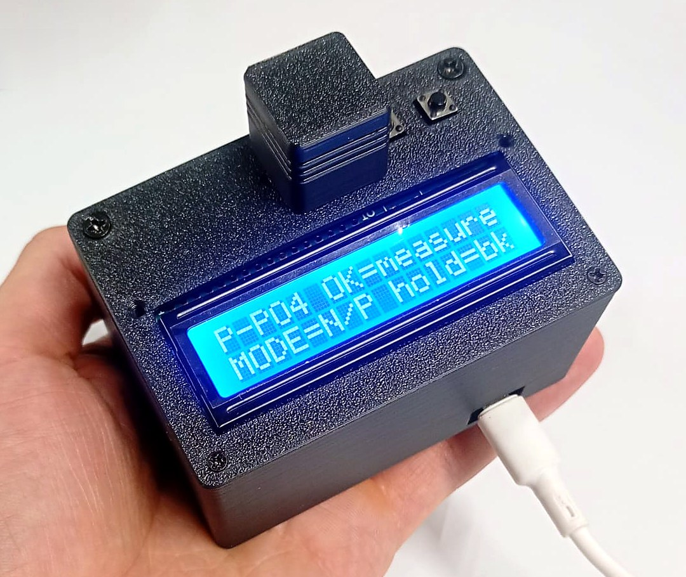
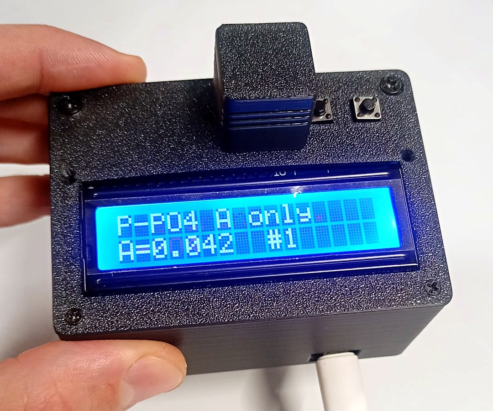

Citizen-science water monitoring often relies on matching a colour by eye against a printed chart. PRATICO 3 measures that colour with a light sensor and turns it into a number: the concentration in mg/L. Field teams keep the FreshWater Watch (FWW) method they already know, and the data become quantitative, comparable and traceable.
| Task | Who | Needs |
|---|---|---|
| Field measurements (Sections 2 – 5) | field officers, trained volunteers | the instrument, a power bank, FWW kits |
| Calibration (Section 6) | a laboratory technician | standards, a laptop with Wi-Fi |
| Data download (Section 7) | data officer or technician | a laptop with Wi-Fi |

① Cap over the well ② OK ③ MODE ④ Display ⑤ Power| ① | Cap and cuvette well. The cuvette with the sample goes into the well, the cap goes on top to keep daylight out. Always measure with the cap on. |
| ② | OK (left): confirm, measure, start the timer. |
| ③ | MODE (right): switch between nitrate and phosphate, go back. Hold for 3 s: take a new blank. |
| ④ | Display: 2 lines of 16 characters. |
| ⑤ | Power: micro-USB, 5 V from a USB power bank. There is no on/off switch: plugging in switches it on. |
The LED shines green light through the cuvette onto a light sensor. The coloured product of the kit reaction absorbs part of the light: the more nitrate or phosphate, the darker the colour and the less light arrives. The instrument compares the light through the sample with the light through clean water (the blank) and computes the absorbance:
A = − log₁₀ ( light through sample ÷ light through blank )
A calibration, made once with solutions of known concentration (standards), converts the absorbance into mg/L. Each instrument has its own calibration. Before every reading the instrument also measures with the LED off and subtracts that dark signal, and it checks that the light is stable and not saturated.
The screens on the right are what the display shows. Numbers are examples.
Plug the power bank into the instrument. After about a minute the program starts by itself: it shows the firmware version, then which analytes are calibrated.
If a line shows no, that analyte gives absorbance only (no mg/L): the instrument must be calibrated first.
The blank stays valid while the instrument is on. Take a new one (hold MODE 3 s) every hour, after moving between shade and sun, or when the temperature changes a lot.
The first line shows the analyte that will be measured. Press MODE to switch between N‑NO3 (nitrate) and P‑PO4 (phosphate).
If a countdown has been configured, the display asks Add reagent,: add the reagent and press OK; insert the cuvette while it counts down; the reading starts by itself at 0. MODE skips the countdown.
only if a countdown is configured
Put the cuvette into the well, always the same way round, put the cap on and press OK. The reading takes about 5 s. Do not move the instrument.
First line: the concentration in mg/L. Second line: the absorbance and the sample number (#). Write both on the data sheet with the site, time and any notes. The result is already saved on the instrument.
Press OK to return to the menu for the next sample.
Unplug the power bank while the display shows a result or the menu, never while it shows Measuring ... or Blank .... Rinse the cuvettes with DI water and let them dry.
The colour keeps developing after the reagent is added; nitrate in particular changes by several percent in a few minutes. A different waiting time is a different result. So:
| Check | How | Accept if |
|---|---|---|
| Check standard, once per field day | a standard of known concentration (e.g. N 1 mg/L, P 0.2 mg/L), reacted and measured like a sample | within ±10 % of the known value |
| Field blank, once per day | DI water reacted and measured like a sample | reads <LOD or close to 0 |
| Duplicate, every 10 samples | a second portion of the same sample, reacted and measured separately | within ±10 %, or within 2 × LOD for low values |
If a check fails: take a new blank and repeat. If it fails again, do not report the day's results without a note, and have the calibration checked.
| Display | Meaning | What to report |
|---|---|---|
| N-NO3 <LOD | below the detection limit (LOD) of this instrument's calibration | “< LOD” and the LOD value (from the calibration report), not 0 |
| N 12.3 mg/L! over range | above 1.1 × the highest calibration standard: not reliable | dilute and measure again (below) |
Mix 1 part sample with 4 parts DI water (e.g. 2 mL + 8 mL): dilution factor 5. React and measure the diluted sample, then multiply the result by 5. Write the dilution on the data sheet. If it is still over range, dilute 1 + 9 (factor 10).
| Message | Meaning | What to do |
|---|---|---|
| N 0.533 mg/L | result | record it with the sample number |
| N-NO3 <LOD | below the detection limit | report “< LOD” |
| N 12.3 mg/L! over range #12 | above the calibrated range | dilute and measure again (Section 4) |
| N-NO3 A only | no calibration for this analyte | record the absorbance; calibrate the instrument (Section 6) |
| Light leak/lid | light reaches the sensor with the LED off | put the cap on properly, move into the shade, OK = retry |
| Saturated | too much light | check that the cuvette is in the well; take a new blank |
| No signal | almost no light reaches the sensor | sample far too dark (dilute), cuvette missing in the blank, or LED fault |
| Unstable signal | the light changed during the reading | bubbles, cuvette moved, colour still developing: fix and press OK to retry |
| Invalid signal | the absorbance could not be computed | take a new blank (hold MODE), measure again |
| Blank low 15% FS | the blank lets through less light than expected | blank not clean water, dirty or wrong cuvette, cap not on; OK continues anyway |
| Auto-range gain 48x | the blank was too bright; the sensitivity was lowered automatically | nothing; the blank is repeated |
| Release MODE | MODE held for 3 s | release it: a new blank follows |
| Sensor timeout | the light sensor does not answer | switch off and on; if it repeats, technical check (wiring) |
| display dark or only blocks | program not started yet, or a fault | wait 2 minutes after power-on; then see Section 9 |
FS (full scale) is the share of the light sensor's range used by the blank. A water blank normally reads about 30 – 40 % FS.
Calibration links absorbance to concentration for one instrument. It is done in the laboratory by a technician, with a laptop connected to the instrument over Wi-Fi.
“As N” or “as NO₃”? Check the stock label. A stock of 1000 mg/L as NO₃⁻ contains 226 mg/L N‑NO₃; a stock of 1000 mg/L as PO₄³⁻ contains 326 mg/L P‑PO₄. Recalculate the volumes below if your stock is labelled that way.
Prepare them fresh on the day. First make an intermediate solution, then dilute it in 100 mL volumetric flasks and fill to the mark with DI water.
Intermediate 100 mg/L: 10.0 mL of 1000 mg/L stock → 100 mL.
| Standard, mg/L | mL of 100 mg/L in 100 mL |
|---|---|
| 0.2 | 0.20 |
| 0.5 | 0.50 |
| 1 | 1.00 |
| 2 | 2.00 |
| 5 | 5.00 |
| 10 | 10.0 |
Intermediate 10 mg/L: 1.00 mL of 1000 mg/L stock → 100 mL.
| Standard, mg/L | mL of 10 mg/L in 100 mL |
|---|---|
| 0.02 | 0.20 |
| 0.05 | 0.50 |
| 0.1 | 1.00 |
| 0.2 | 2.00 |
| 0.5 | 5.00 |
| 1 | 10.0 |
Also prepare a reagent blank: DI water reacted with the kit like a sample. It is entered as level 0 and corrects for the colour of the reagent itself. Prepare a separate check standard (a different dilution from a different stock, if possible) to verify the calibration afterwards.
ssh fww@pratico-01.localpratico-cal -a B -r 20.2,0.5,1,2,5,10 for nitrate). Press Enter to accept, or type your own list; add 0 at the start to include the reagent blank, e.g. 0,0.2,0.5,1,2,5,10. level n A mean sd back-calc recovery
0.5 2 0.0594 0.0004 0.4996 99.9%
1 2 0.1130 0.0006 1.0002 100.0%
...
slope 0.10701 AU per mg/L intercept +0.00598 AU R2 0.99950
residual sd 1.20 mAU = 0.0112 mg/L LOD 0.0370 LOQ 0.1121 mg/L worst recovery 3.1% off0.2; type it again to bring it back. Press Enter to continue.y to save it as the active calibration. The old one is kept with a date in its name.| Look at | Accept if |
|---|---|
| Recovery of each level | within ±15 % (levels outside are marked). Do not judge by R² alone: it stays above 0.99 even when the lowest standards are 40 % off. |
| Check standard, measured afterwards in the field program | within ±10 % of its value |
| LOD / LOQ | low enough for your monitoring purpose. Write them in the instrument's record: results below the LOD are reported as “< LOD”. |
| Problem | Typical cause | Action |
|---|---|---|
| one level far off, others fine | wrong dilution, bubble, fingerprint | measure it again, or prepare it again; exclude only with a reason |
| low standards read too high, large intercept | reagent colour, timing | add a reagent blank (level 0), fix the reaction time |
| the line bends at the top | absorbance too high | leave out the top level and dilute samples above it |
| replicates disagree | cuvette position, colour still developing | same orientation, fixed reaction time |
A level can also be removed later without measuring again: the readings are saved in ~/PRATICO_3/calibration/.
pratico-cal --refit ~/PRATICO_3/calibration/cal_P_20261118-120223.csv --exclude 0.05To have the instrument time the reaction in both the field program and the calibration, create a settings file on the instrument:
nano ~/PRATICO_3/pratico3_config.jsonType one line with the times in seconds, for example (use the times of your kit instructions):
{"reaction_time_s": {"N": 300, "P": 120}}Save (Ctrl+O, Enter, Ctrl+X) and restart the field program:
systemctl --user restart pratico3Changing the reaction time requires a new calibration.
Every result is written to the instrument's memory card before it is shown, in the file ~/PRATICO_3/results/results.csv (one row per sample; opens in Excel). The main columns:
| Column | Content |
|---|---|
seq | sample number, the # shown on the display |
datetime, clock_synced | date and time; clock_synced = 0 means the clock was not set (see below) |
analyte | N-NO3 or P-PO4 |
conc_mgL, flag | concentration in mg/L; flag empty, <LOD, >range or no cal |
A, sigma_A | absorbance and its uncertainty |
reaction_s | reaction time measured by the countdown (empty if not used) |
blank_age_s | seconds since the blank was taken |
cal_date, fw | date of the calibration used, firmware version |
Other columns (raw signals, dark, gain …) are for troubleshooting. Every single reading is also kept in ~/PRATICO_3/logs/.
Date and time. The instrument has no clock battery; it sets its clock only when connected to Wi-Fi. When clock_synced is 0 the date may be wrong: use the sample number and the field data sheet to match results to sites and times.
Switch the instrument on near the Wi-Fi network it knows. On the laptop, in PowerShell or Terminal:
scp fww@pratico-01.local:PRATICO_3/results/results.csv pratico-01_results.csvThe file is copied into the current folder of the laptop (on Windows usually C:\Users\<name>). Alternatively use a graphical program such as WinSCP (Windows) with the same name, user and password.
seq.PRATICO reports N‑NO₃ (nitrate as nitrogen) and P‑PO₄ (phosphate as phosphorus), in mg/L. To compare with limits expressed as nitrate or phosphate ion:
| mg/L NO₃⁻ (nitrate) | = mg/L N‑NO₃ × 4.43 |
| mg/L PO₄³⁻ (phosphate) | = mg/L P‑PO₄ × 3.07 |
| When | What |
|---|---|
| every field day | check standard and field blank (Section 4) |
| monthly | blank level: a water blank should still read about 30 – 40 % FS. A slow decrease means a scratched cuvette or an ageing LED. |
| monthly | copy and back up the results file |
| every 6 months | recalibrate (Section 6); replace scratched cuvettes |
With the instrument connected to a network with internet access:
pipx upgrade pratico-sensor
pratico-service installThe calibration and the results are kept. Record the new firmware version in the instrument's record.
| Symptom | Likely cause | What to do |
|---|---|---|
| Display stays dark after 2 minutes | power bank empty or switched itself off, cable | charge the power bank; try another cable. Some power banks switch off at low current: use one with an “always on” or low-current mode. |
| Display lit but empty or only blocks | program not running | unplug, wait 10 s, plug in again. If it repeats: technician (Build Guide, Appendix B). |
| Light leak/lid keeps appearing | cap not seated, direct sun | cap on firmly, move into the shade, OK to retry |
| Unstable signal keeps appearing | bubbles, cuvette not pushed down, colour still changing | tap out bubbles, push the cuvette down, wait the full reaction time |
| Results drift during the day | old blank, temperature change | new blank (hold MODE 3 s); keep the instrument in the shade |
| Check standard fails | old standard, wrong reaction time, calibration no longer valid | prepare a fresh standard; check the timing; recalibrate |
| Buttons do nothing | program still starting, or a wiring fault | wait; if it persists, technician |
| Wrong date in the results | no Wi-Fi since power-on | normal; use seq and the field sheet |
ssh: host not found | instrument not on the Wi-Fi, or the laptop is on another network | wait 2 minutes after power-on; check that both are on the same network; use the IP address |
For a technician, the program's log shows what happened:
journalctl --user-unit=pratico3 -n 50
pratico-service status| Daily QC | Expected | Measured | OK |
|---|---|---|---|
| Blank (% FS shown at Blank OK) | 30 – 40 % | ☐ | |
| Check standard N | ☐ | ||
| Check standard P | ☐ | ||
| Field blank (DI water + reagent) | < LOD | ☐ |
| # | Site / sample ID | Time | GPS / location | N or P | mg/L | A | Dil. | Notes: flag, weather, water colour |
|---|---|---|---|---|---|---|---|---|
# = sample number shown on the display. Dil. = dilution factor (1 if not diluted); the mg/L column is the value after multiplying by it.
| Analytes | N‑NO₃ and P‑PO₄ with FreshWater Watch colorimetric kits |
| Calibration ranges (default) | N‑NO₃ 0.2 – 10 mg/L; P‑PO₄ 0.02 – 1 mg/L (adjustable) |
| Detection limits | set by each instrument's calibration (shown in its calibration report). Published values for the previous version, PRATICO 2: 0.05 mg/L N‑NO₃ and 0.003 mg/L P‑PO₄. |
| Light source / detector | green LED, 525 nm / LTR‑329 light sensor, 16 bit |
| Cuvette | 10 mm light path, 12.5 × 12.5 mm outside |
| Reading | dark + LED-on cycle, about 5 s; blank about 10 s |
| Quality checks | light leak, saturation, signal level, stability, on every reading |
| Size, power | 85 × 60 × 44 mm; 5 V micro-USB (power bank) |
| Computer | Raspberry Pi Zero 2 W, Raspberry Pi OS; firmware pratico-sensor on PyPI |
| Data | CSV on the instrument's SD card, copied over Wi-Fi |
Settings are changed only by a technician, in ~/PRATICO_3/pratico3_config.json, listing only the keys that differ from the defaults. Restart the field program afterwards (systemctl --user restart pratico3). Any change to the optical settings or the reaction time requires a new calibration.
| Key | Default | Meaning |
|---|---|---|
reaction_time_s | {"N": 0, "P": 0} | countdown from reagent to reading, s (0 = read on OK) |
gain, integration_ms | 96, 200 | light sensor sensitivity and integration time |
blank_repeats | 2 | readings averaged for the blank |
cal_levels | N 0.2 – 10, P 0.02 – 1 | levels proposed by the calibration |
dark_max_counts, sat_counts, max_rel_spread | 20, 60000, 0.02 | quality-check limits |
PRATICO 3 User Guide, version 1.0, November 2026. PRATICO is open source (GPL-3.0): github.com/LowCostSensor/PRATICO-sensor. If you use PRATICO in published work, please cite: Cirrone, R. G., Boldrini, A., Polvani, A., Arrigucci, M., Liu, X., Galgani, L., Woods, S., & Loiselle, S. A. (2025). Low-Cost Optical Sensing for Nitrate and Phosphate: Advancing Community Freshwater Monitoring. ACS ES&T Water, 5, 6258–6267. https://doi.org/10.1021/acsestwater.5c00314. Contact: Riccardo Gaetano Cirrone, riccardogaetano.cirrone@unipa.it.